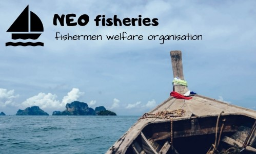

NEO-FISHERIES
fisherman welfare organisation
1800-425-1660
E-Mail: neofisheries@gmail.com
 |
 |
|  |
NEO-FISHERIESfisherman welfare organisation |
|
|
1. (1) This Act may be called the Maritime Zones of India (Regulation) of Fishing by Foreign Vessels) Act, 1981.
(2) It shall come into force on such date as the Central Government may, by notification in the official Gazette, appoint Provided that different dates may be appointed for different provisions of this Act and any reference in any such provisions to the commencement of this Act shall be constructed as a reference to the coming into force of that provision. 2. In this Act, unless the context otherwise requires, (a) “exclusive economic zone of India” means exclusive economic zones of India in accordance with the provisions of section 7 of the Territorial Waters, Continental Shelf, Exclusive Economic Zone and other Maritime Zones Act, 1976; Definitions 80 of 1976 (b) “fish” means any aquatic animal, whether piscine or not, and includes shell fish crustacean, molluscs, turtle (chelonia), aquatic mammal (the young, fry, eggs and spawn thereof), holothurians, coelenterates, sea weed, coral (porifera) and any other aquatic life; (c) “fishing” means catching, taking, killing, attracting or pursuing fish by any method and includes the processing, preserving, transferring, receiving and transporting of fish; (d) “foreign vessel” means any vessel other than an Indian vessel; (e) “Indian vessel” mean:- (I) a vessel owned by Government or by a corporation established by a central Act or a Provincial or State Act, or (II) a vessel:- (i) which is owned wholly by persons to each of whom any of the following descriptions applies: (1) a citizen of India; (2) a company in which not less than sixty per cent , of the share capital is held by citizens of India; (3) a registered cooperative society every member whereof is a citizen of India or where any other cooperative society is a member thereof, every individual who is a member of such other cooperative society is a citizen of India; and (ii) which is registered under the Merchant Shipping Act, 1958, or under any other Central Act or any Provincial or State Act. Explanation – For the purposes of this clause, “registered cooperative society” means a society registered or deemed to be registered under the Cooperative Societies Act, 1912, or any other law relating to cooperative societies for, the time being in force in any State; (f) “licence” means a licence granted under section 4; (g) “maritime zones of India” means the territorial waters of India or the exclusive economic zone of India; (h) “master” in relation to a vessel, means the person for the time being having command or charge of the vessel; (i) “owner”, in relation to a vessel, includes any association of persons, whether incorporated or not, by whom the vessel is owned or chartered; 44 of 1958 (j) “permit” means a permit granted or deemed to have been granted under section 5; (k) “prescribed”, means prescribed by rules made under this Act; (l) “processing”, in relation to fishing, includes cleaning, beheading, filleting, shelling, peeling, icing, freezing, canning, salting, smoking, cooking, pickling, drying and otherwise preparing or preserving fish by any other method; (m) “specified ports” means such ports as the Central Government may, by notification in the Official Gazette, specify for the purpose of this Act; (n) “territorial waters of India” means the territorial waters of India in accordance with the provisions of section 3 of the Territorial Waters, Continental Shelf, Exclusive Economic Zone and other Maritime Zones Act, 1976; (o) “vessel” includes any ship, boat, sailing vessel or other description of vessel.